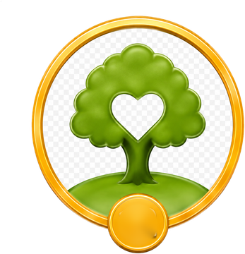
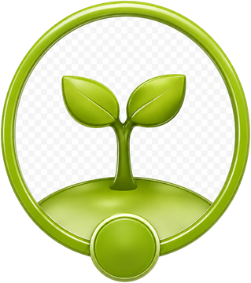
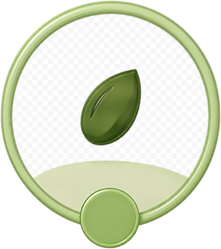

HEART™Core human skills
Five HEART™ competencies, practised in every project.
At school: speaking up in class, working well in groups, sticking with hard problems.
MASTER AI. STAY HUMAN.
GrowMate® is an after-school program that complements school education. Through interdisciplinary real-world projects, your child gets purposeful practice in the core competencies and subject skills of the BC curriculum, and you can clearly see the growth.
Competencies that matter in school and life
Today’s classrooms care about more than what students know. They also look at how students think, communicate and work with others.
Yet a busy classroom leaves limited time for focused practice and individual feedback. And the stronger AI becomes, the more these human skills matter. GrowMate® gives them focused, regular practice.
What your child gains

HEART™Five HEART™ competencies, practised in every project.
At school: speaking up in class, working well in groups, sticking with hard problems.
Inquire, design, create, revise, present and reflect, repeated every month until it becomes a habit.
At school: knowing how to start, plan and improve inquiry projects and presentations.

Growth recordsWatch your child present finished work at every monthly Showcase, keep a portfolio of their projects, and read HEART™ Growth Reports with specific examples.
At school: more confident presentations and group work, and real examples to bring to self-assessment and parent-teacher conversations.
HEART™ · What we develop

Take a role, listen, work through disagreement and move the group forward.

Explain ideas clearly and adjust to the audience.

Make a plan, get started, adjust and follow through.

Stay steady, bounce back from setbacks and manage time and effort.

Ask good questions, weigh evidence and combine ideas in new ways.
Five competencies, 20 behaviour indicators. They guide goal setting, mentor observation, project feedback and growth records.
Real-world learning. Real skill practice.
Small groups, active participation. Each month a group of about four peers takes one real-world project from first question to finished work, guided by a mentor.
Week 1
Inquire
Online · small group
Week 2
Design · Create
Online · small group
Week 3
Create · Revise
Online · small group
Week 4
Revise
Online · small group
Showcase
Present · Reflect
In person · with families
GrowLoop™ six-step cycle Inquire Design Create Revise Present Reflect

Children look back on what they did, name how they have grown and set a goal for next month. It is the same self-reflection and goal-setting habit BC schools ask of students, practised every month with a mentor’s feedback.
How we’re different
| Academic tutoring | GrowMate® | |
|---|---|---|
| Focus | What to know: subject content | What to do with it: asking questions, planning, solving problems, communicating and working with others |
| How children learn | Lessons and practice questions | Interdisciplinary, real-world projects across eight domains, in small groups with a mentor |
| Where it shows at school | Tests and quizzes | More confidence in class discussions, group work, presentations and inquiry assignments |
Every BC subject includes curricular competencies, the “doing” part of learning: questioning, planning, reasoning and communicating. These are the skills GrowMate® practises in every project.
Tutoring helps children answer questions. GrowMate helps them turn ideas into action.
What parents say
Spaces are limited. Apply online, or scan the QR code to chat with us on WeChat.
 Scan to chat on WeChat
Scan to chat on WeChat